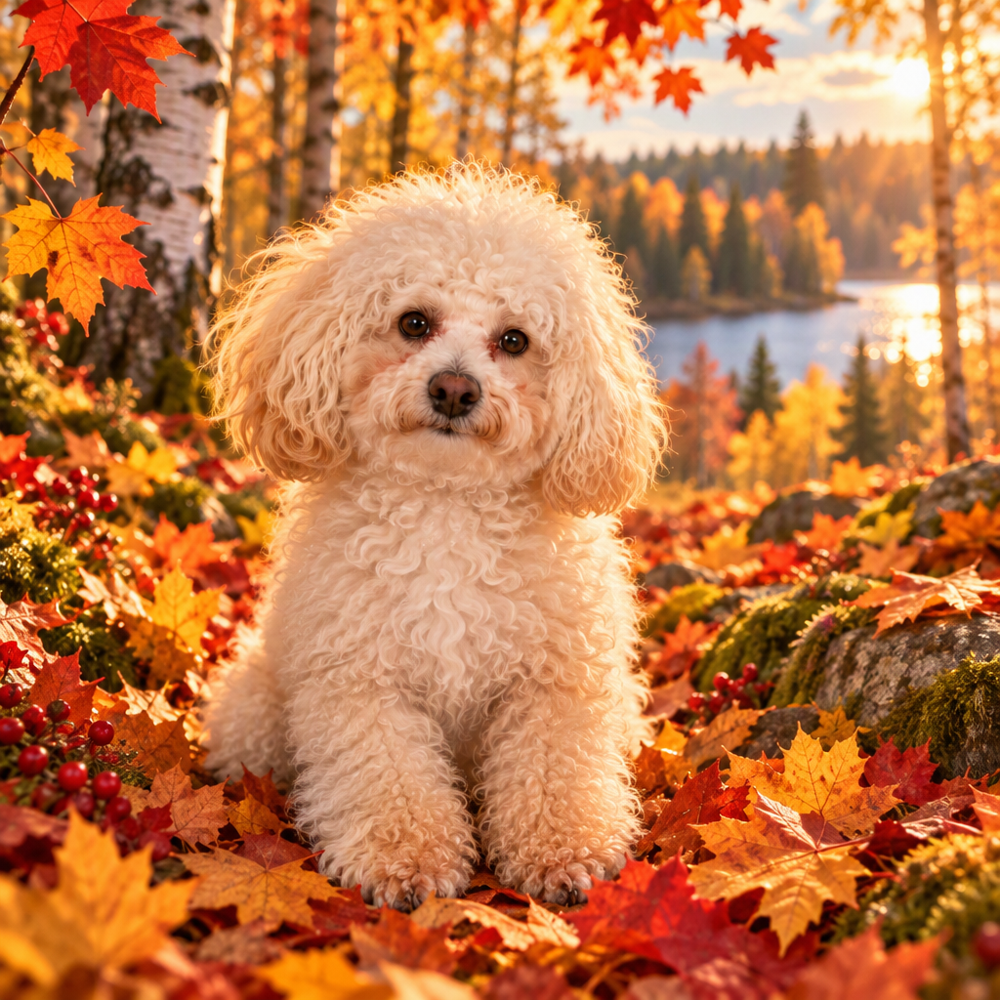
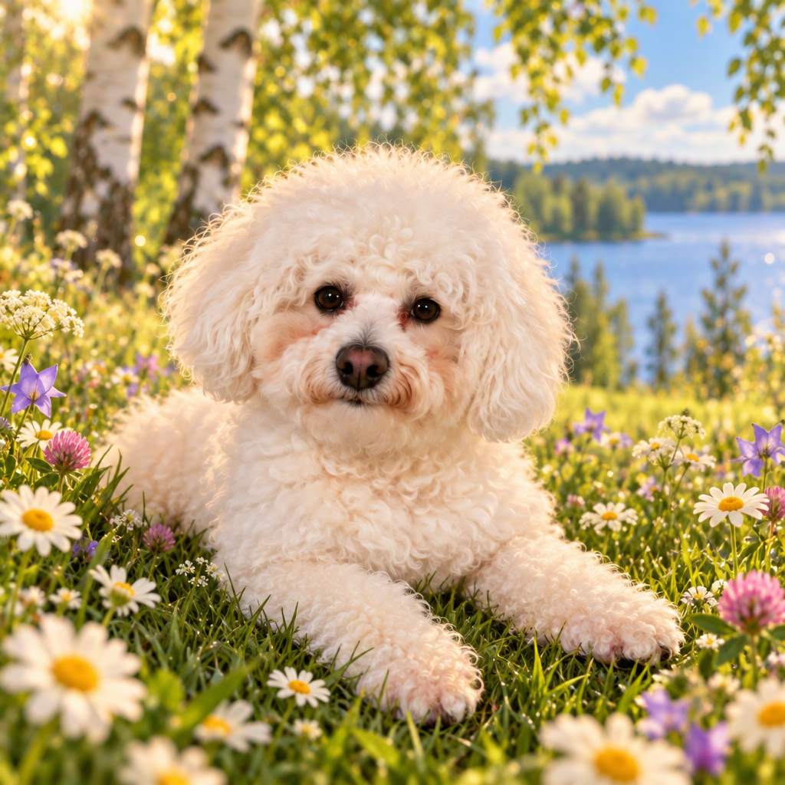

Minun rakkaat koirani
Tämä sivusto kertoo kahdesta rakkaasta koirastani, Pirozhokista ja Chaposta. Sivustolta löydät tietoa niiden roduista, luonteista sekä arjesta eri vuodenaikoina. Koirat ovat tärkeä osa elämääni ja tuovat paljon iloa jokapäiväiseen arkeen. Kuvagalleriasta voit tutustua niiden seikkailuihin kesällä, syksyllä ja talvella sekä nähdä, millaisia persoonallisuuksia ne ovat. Toivottavasti viihdyt sivustollani ja nautit kuvista yhtä paljon kuin minä niiden ottamisesta.

